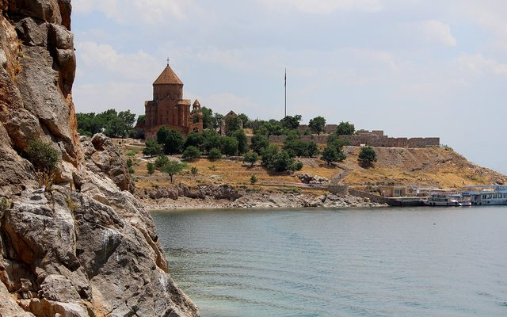

Byzantium and early Christianity. From Constantinople to Cappadocia and from Trabzon to Cyprus, the Byzantine legacy of churches, mosaics and monasteries is found all over Anatolia. In 330 the Roman emperor Constantine moved his capital to Byzantion and refounded it as Constantinople. The Eastern Roman, or Byzantine, Empire lasted more than a thousand years, ending with the Ottoman conquest of the city in 1453. Hagia Sophia, built under Justinian in the 6th century, is a milestone of world architecture with its vast dome; the Great Palace Mosaics and the mosaics of the Chora and Pammakaristos (Fethiye) churches show the peak of this art in Istanbul. Anatolia was one of the first lands where Christianity spread. The Church of St Peter in Antakya is considered one of the oldest known churches; Tarsus has traces of St Paul, Ephesus of St John, Demre of St Nicholas and Silifke of St Thecla. The first ecumenical council, held at Nicaea (İznik) in 325, was a founding event in Christian history. Sumela Monastery in Trabzon, Alahan Monastery in Mersin, Dara in Mardin and St Barnabas Monastery in Cyprus show the breadth of the Byzantine world, while Ani in Kars and Akdamar in Van are masterpieces of Armenian architecture from the same era.
From Constantinople to Cappadocia and from Trabzon to Cyprus, the Byzantine legacy of churches, mosaics and monasteries is found all over Anatolia.
In 330 the Roman emperor Constantine moved his capital to Byzantion and refounded it as Constantinople. The Eastern Roman, or Byzantine, Empire lasted more than a thousand years, ending with the Ottoman conquest of the city in 1453. Hagia Sophia, built under Justinian in the 6th century, is a milestone of world architecture with its vast dome; the Great Palace Mosaics and the mosaics of the Chora and Pammakaristos (Fethiye) churches show the peak of this art in Istanbul.
Anatolia was one of the first lands where Christianity spread. The Church of St Peter in Antakya is considered one of the oldest known churches; Tarsus has traces of St Paul, Ephesus of St John, Demre of St Nicholas and Silifke of St Thecla. The first ecumenical council, held at Nicaea (İznik) in 325, was a founding event in Christian history.
Sumela Monastery in Trabzon, Alahan Monastery in Mersin, Dara in Mardin and St Barnabas Monastery in Cyprus show the breadth of the Byzantine world, while Ani in Kars and Akdamar in Van are masterpieces of Armenian architecture from the same era.
Where to see this period
 Hagia Sophia History and Experience Museumİstanbul
Hagia Sophia History and Experience Museumİstanbul Great Palace Mosaic Museumİstanbul
Great Palace Mosaic Museumİstanbul Fethiye Museumİstanbul
Fethiye Museumİstanbul Kız Towerİstanbul
Kız Towerİstanbul Bursa İznik Göl BazilikasıBursa
Bursa İznik Göl BazilikasıBursa Ayasuluk - St.Jean Archaeological Siteİzmir
Ayasuluk - St.Jean Archaeological Siteİzmir Aziz (St.) Nikolaos Monument MuseumAntalya
Aziz (St.) Nikolaos Monument MuseumAntalya St. Pierre Monument MuseumHatay
St. Pierre Monument MuseumHatay Tarsus St. Paul KuyusuMersin
Tarsus St. Paul KuyusuMersin Silifke Ayatekla Archaeological SiteMersin
Silifke Ayatekla Archaeological SiteMersin Alahan MonasteryMersin
Alahan MonasteryMersin Sümela MonasteryTrabzon
Sümela MonasteryTrabzon Küçük Ayvasıl St. Anna ChurchTrabzon
Küçük Ayvasıl St. Anna ChurchTrabzon Ani Archaeological SiteKars
Ani Archaeological SiteKars
Akdamar Monument MuseumVan Dara Archaeological SiteMardin
Dara Archaeological SiteMardin St. Barnabas MonasteryGazimağusa
St. Barnabas MonasteryGazimağusa🎓 Test yourself
1. In which year was Constantinople refounded as capital?
2. Under which emperor was Hagia Sophia built?
3. Where did the first ecumenical council meet in 325?
4. Which monastery clings to a sheer cliff in Trabzon?
👩🏫 For teachers
A free, printable activity sheet on this topic: reading, fill in the blanks, matching, timeline and open questions. Page two is the answer key; the QR code opens this audio guide in class. Free to copy for classroom use.